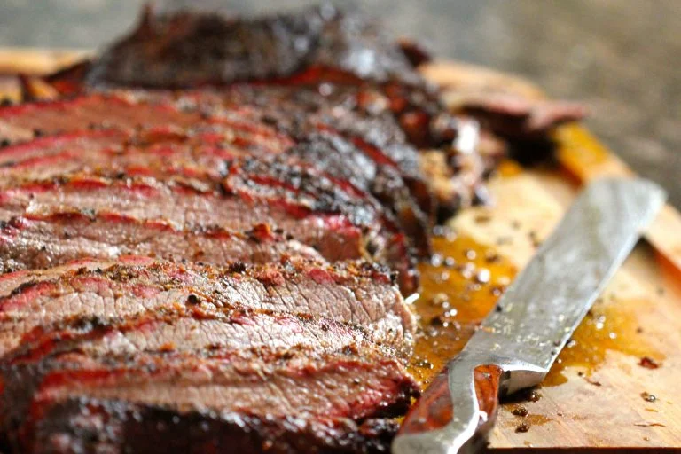

Brisket

Smoked Brisket
This is an appropriately sized paragraph describing how awesome this brisket is.
- 4 large garlic cloves, smashed
- 1/2 teaspoon kosher salt, plus more for seasoning
- 4 sprigs fresh rosemary, needles striped from the stem and chopped
- 1/4 cup extra-virgin olive oil
- 1 (4 pound) beef brisket, first-cut
- Coarsely ground black pepper
- 4 large carrots, cut in 3-inch chunks
- 3 celery stalks, cut in 3-inch chunks
- 4 large red onions, halved
- 2 cups dry red wine
- 1 (16-ounce) can whole tomatoes, hand-crushed
- 1 handful fresh flat-leaf parsley leaves
- 3 bay leaves
- 1 tablespoon all-purpose flour (optional)
- Potato Pancakes, recipe follows
- Preheat the oven to 325 degrees F.
- On a cutting board, mash the garlic and 1/2 teaspoon of the salt together with the flat-side of a knife into a paste. Add the rosemary and continue to mash until incorporated. Put the garlic-rosemary paste in a small bowl and add 2 tablespoons of olive oil; stir to combine.
- Season both sides of the brisket with a fair amount of kosher salt and ground black pepper. Place a large roasting pan or Dutch oven over medium-high flame and coat with the remaining olive oil. Put the brisket in the roasting pan and sear to form a nice brown crust on both sides. Lay the vegetables all around the brisket and pour the rosemary paste over the whole thing. Add the wine and tomatoes; toss in the parsley and bay leaves. Cover the pan tightly with aluminum foil and transfer to the oven. Bake for about 3 to 4 hours, basting every 30 minutes with the pan juices, until the beef is fork tender.
- the brisket to a cutting board and let it rest for 15 minutes. Scoop the vegetables out of the roasting pan and onto a platter, cover to keep warm. Pour out some of the excess fat, and put the roasting pan with the pan juices on the stove over medium-high heat. Boil and stir for 5 minutes until the sauce is reduced by 1/2. (If you want a thicker sauce, mix 1 tablespoon of flour with 2 tablespoons of wine or water and blend into the gravy).
- Slice the brisket across the grain (the muscle lines) at a slight diagonal.
Back to Home